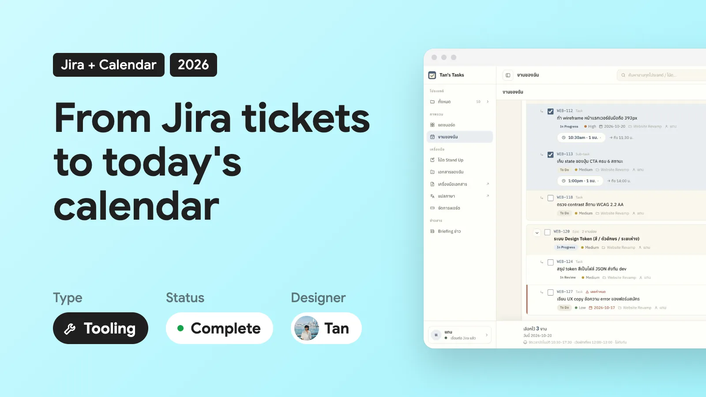
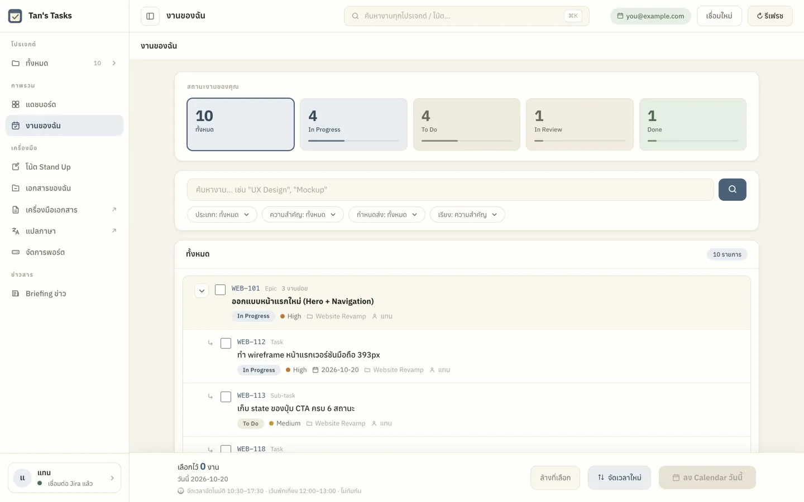
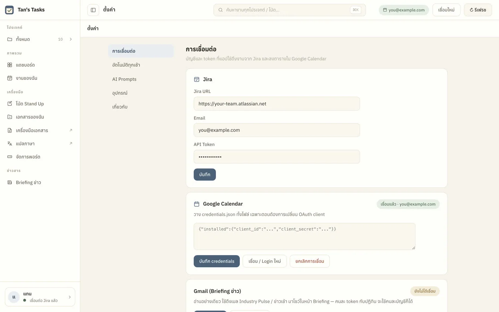
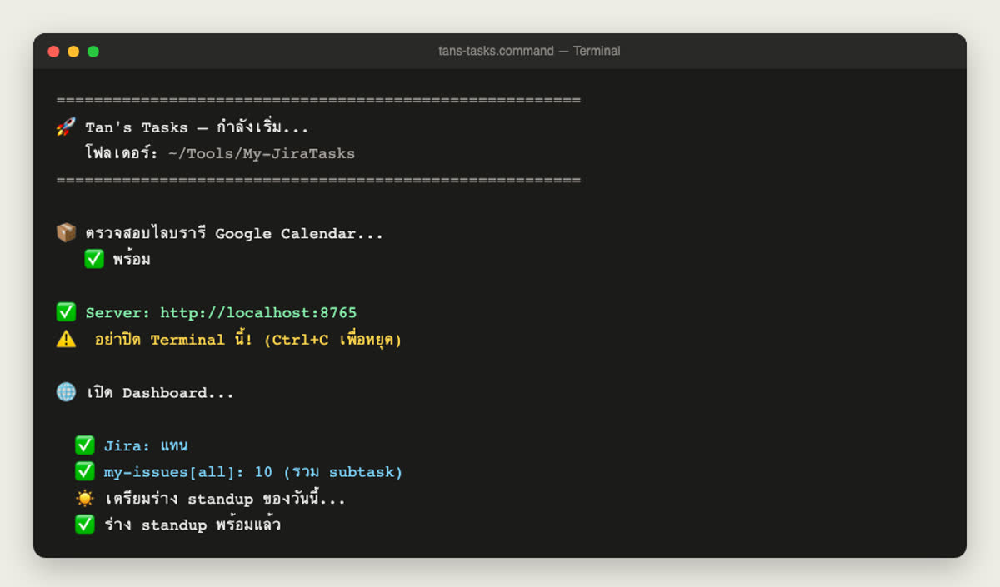
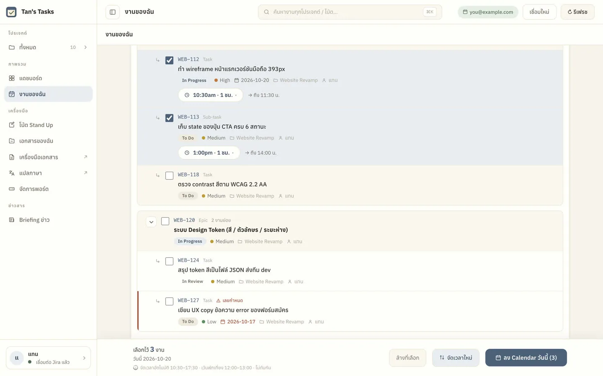
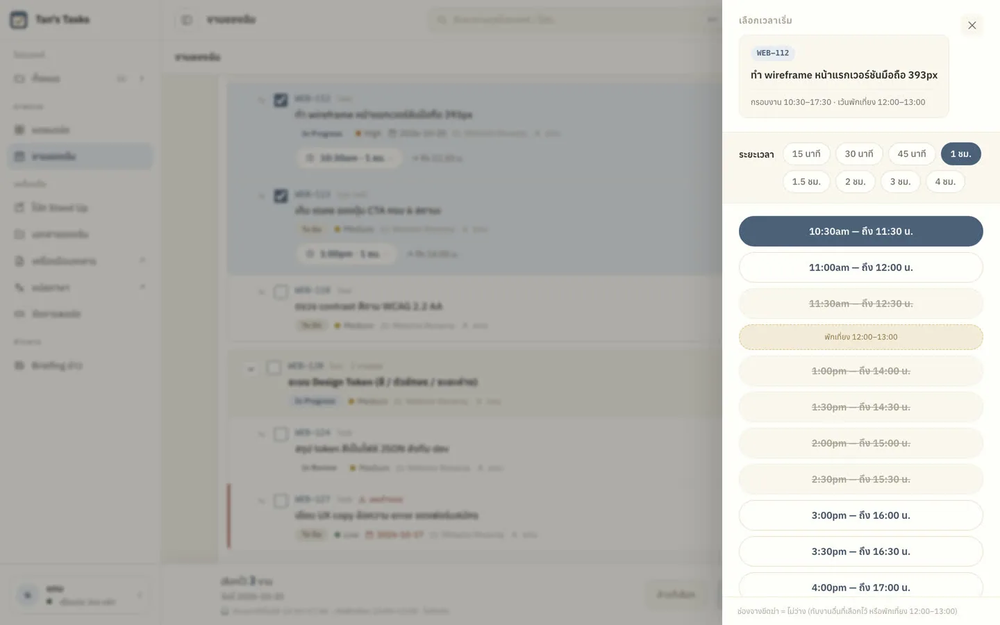
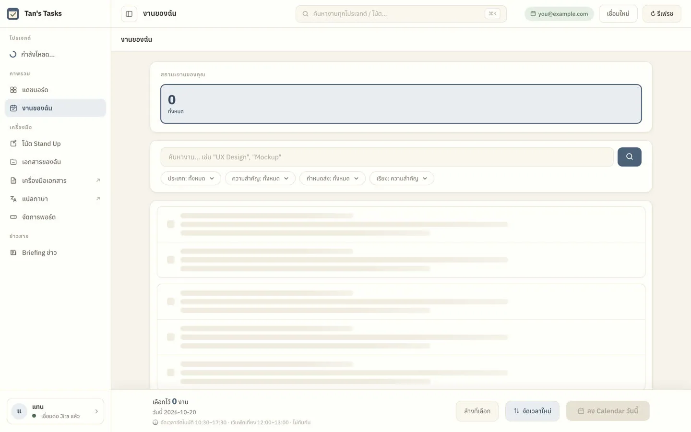
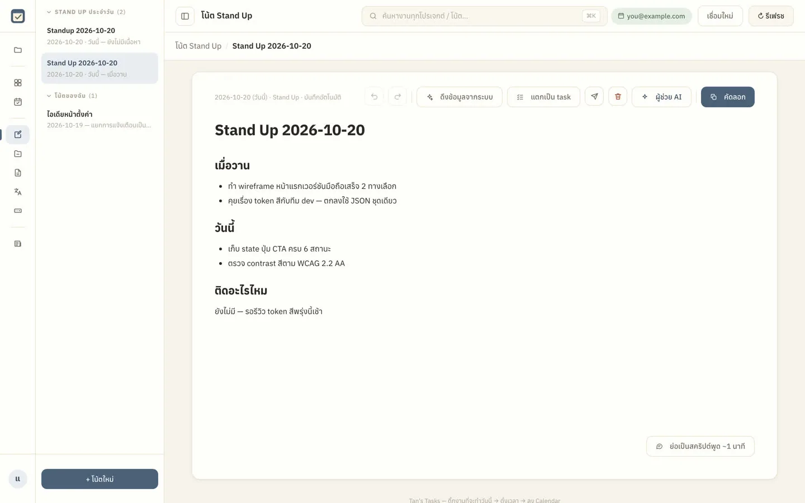
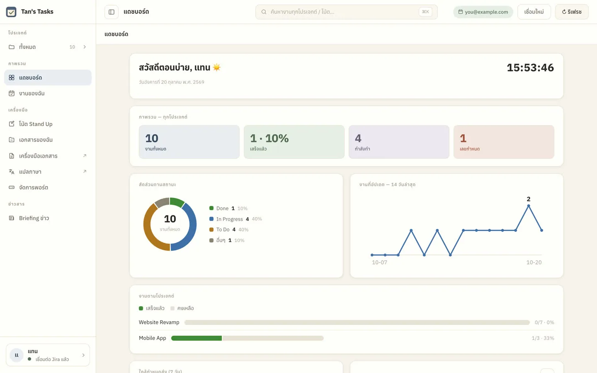
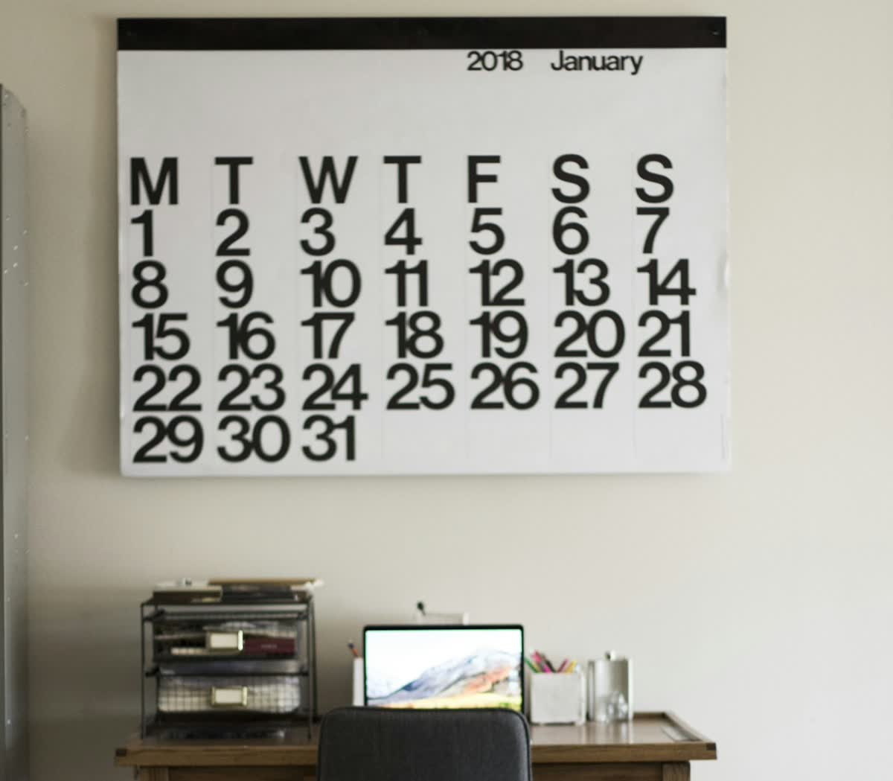

Tan's Tasks — Jira to today's schedule in one click
A tool that started from ten minutes of retyping a day and grew into the first thing I open each morning — one file, double-click, no accounts, no server, and no secret ever leaves the machine

Double-click one file and the browser opens on its own — tick what you'll work on today, drag the times, and add it all to Google Calendar in one go. From there it grew into a full daily workspace: notes, an AI assistant, and a standup draft written from the work actually done.
Two tools that each know half of the same story
Jira knows what's still open · the calendar knows where the free time is · neither knows both, so every morning a person has to be the bridge

Every morning I opened Jira, read through what was there, decided in my head what to do today, then typed the same ticket names again into the calendar — the thinking took two minutes, the retyping took longer, and by evening I still couldn't remember what I'd touched that day.
Typing the same ticket names in two places
The same data gets entered twice: once read from Jira, once typed into the calendar. Every retype is a chance for a typo, and it's work that creates nothing new.
Booking work over existing meetings
When planning in my head, I couldn't see that the afternoon already had a meeting booked. I'd only find out when the calendar showed a clash, then spend time reshuffling the whole day.
Blanking on the evening standup
I couldn't remember what I'd done that day and had to reopen Jira tickets one by one, which only shows when a status changed, not where the effort actually went.
Off-the-shelf tools want the company token
There are plenty of services that connect Jira to a calendar, but every one asks for a work API token to store on their servers — not a call one person should make alone for personal convenience.
Decided that “where the token lives” is the first constraint, not a feature
Once that became the starting criterion, the options narrowed a lot and the decision got easy.

| Option | Where the token lives | Cost | Why rejected / chosen |
|---|---|---|---|
| Automation service | Provider's servers | Monthly | Fastest to set up, but means handing a work API token to a third party permanently |
| Jira plugin | On company systems | Needs approval | Safe for the token, but it changes a shared team tool to solve one person's problem |
| Deployed web app | My own server | Hosting + upkeep | Full freedom, but I'd maintain a server and CI forever for a tool I open once a day |
| One local file Chosen | On my own machine | None | Double-click to run: no deploy, no accounts, nothing leaves the machine, and I can edit the code while using it |
The whole project has just one file to run — a bash script with a Python http.server embedded inside, and the entire app's HTML embedded in that. No build step, no framework, no node_modules. All three secret files were gitignored from the first commit.
The whole architecture lives in a file you can double-click
A .command file lets Finder run it like an app, while inside it's still a shell script you can read and edit

When I added the morning email digest, I didn't stuff the Gmail scope into the existing calendar token — I made it a separate token. Mail access can be revoked without affecting calendar booking, and if one token leaks, the damage stays within that token's scope.
The morning flow — 5 steps
From opening the laptop to today's schedule already in the calendar


Pull in my tickets
Calls Jira with the local token, groups by Epic with collapse/expand, and shows how many subtasks each group has
Tick what to do today
Pick from the real list, no retyping. It remembers the last project you chose, so next time it opens right where you left off.
Set times while seeing what's already booked
Time already taken by calendar events is blocked at selection, not discovered after you've booked over it
Add everything to the calendar at once
Creates an event for every ticked ticket, then tags the card “On calendar” with the time, so it can't be added twice
In the evening, generate a standup draft
Reads that day's day-log and drafts a message ready to send. Pass a date to go back to an earlier day.
Five things I fixed because using it every day became unbearable
Each one came from being the only user of my own tool, which surfaces the problems regular users never complain about — they just quietly stop using it

A standup draft guessed from Jira statuses was wrong almost every day
The first version assembled the draft from issues whose status changed that day. The problem: status doesn't show where the effort went — a ticket I worked on all day but didn't finish never appeared, while one I just closed in the morning became the headline.
Native dropdowns can't be styled, so the app looked inconsistent
I used the browser's standard dropdown and found that on macOS I couldn't really control its height, font or selected state. Every page that used it looked out of place next to the rest.
Set a font for the whole page, but buttons and inputs didn't follow
The Thai font was declared on body, and all the text was right except the labels in buttons and inputs, which stayed in the system font. It made the app look assembled from two places.
font-family from their parent by browser default, so you have to set font: inherit on them explicitly — a bug you can't see unless you put the two side by sideTask durations weren't being saved
I'd pick a duration, then on adding to the calendar it always came back as the default. I spent a long time digging through the state handling, when the cause was in the component itself.
A spinner made it feel slower than it really was
While loading tickets from Jira, a spinner sat in the middle of a blank screen. Every second felt longer than it was, and there was no hint of what was coming back.
25 commits, from “add to calendar” to a daily workspace
None of this was planned up front. Each piece was added when a real problem came up during use.


- Notion-style notes — 13 block types, slash menu, nested bullets, comments, keyboard shortcuts, and tables you can actually type into
- AI assistant beside the notes — highlight text and rewrite just that part, or describe things in an empty note and have it split them into tasks
- Morning email digest — pulls real mail from Gmail and summarizes it, then sends that same summary to Telegram instead of summarizing twice and getting two different versions
- 5 PDF tools — write on documents, add Thai-numeral page numbers, convert to images, add watermarks, compress images
- A translator on the same page, so there's no switching tabs mid-writing
- Port manager page — see what's holding which port, grouped into tabs, and kill stuck processes from the web page
What I chose not to build
A personal tool has exactly one advantage: it knows who the user is. Start designing for other people and that advantage disappears.

- No multi-user system — no login, no permissions, no database, because it already runs on the machine of the person using it
- Not deployed anywhere — bound to
localhostonly. Being unreachable from outside is a security feature, not a limitation. - No framework and no runtime dependencies apart from Google's libraries, installed once — a tool that breaks because a dependency updated is a tool that breaks on your busiest morning
- No tests covering everything — but the paths that touch real data, like creating events and drafting standups, are tested by hand before every commit